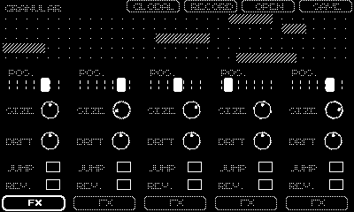
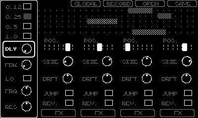
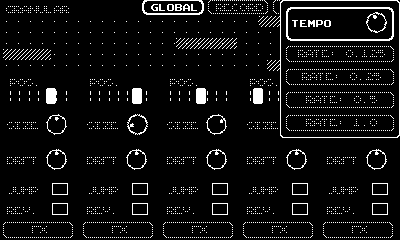
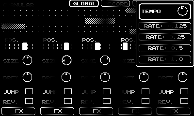

Granular is an experimental 'grain sampler' for Playdate that plays subsamples from a recorded parent sample. It includes various modifiable parameters and effects to change the sound which produces beautiful glitchy ambience that can be used on its own or as a background for other instruments.
Sample output using the built-in 'demo organelle' file:
Controls
'A' selects and navigates, 'B' closes and pops the stack back to the previous location, everything should be intuitive with a little exploration. Granular operates on probabilities; when you select 'jump' or 'rev.' (reverse) or other parameters you're telling the underlying engine to allow the possibility of that happening each cycle. The 'global' menu allows you to set a base playback rate, the default is 0.25 which plays samples at 1/4 speed/pitch. Global also has a 'tempo' setting, the lower the tempo the less chance one of the five subsamples has of triggering, when set to 0 the remaining operations will complete which can be used to gently finish playback.
 
 
